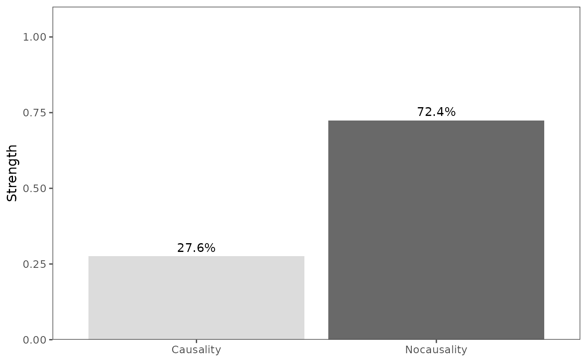

Introduction to patterncausality
Stavros Stavroglou, Athanasios Pantelous, Hui Wang
Source:vignettes/patterncausality.Rmd
patterncausality.RmdPattern Causality gives us a method to measure the causality in the complex system, it has its own ability to catch the hidden pattern in many kinds of series, so that it is statistically sufficient.
PC in financial market
First of all, we can import the data of AAPL and MSFT, also we can import data from the yahooo api.
library(patterncausality)
data(stock)
head(stock)
#> AAPL.Open AAPL.High AAPL.Low AAPL.Close AAPL.Volume
#> 1986-03-13 0.110491 0.111607 0.108817 0.110491 115964800
#> 1986-03-14 0.110491 0.117188 0.110491 0.116629 384854400
#> 1986-03-17 0.116071 0.116071 0.113281 0.116071 118720000
#> 1986-03-18 0.116071 0.121652 0.115513 0.119978 249356800
#> 1986-03-19 0.119978 0.121652 0.117746 0.118304 189884800
#> 1986-03-20 0.125000 0.132254 0.125000 0.126116 904131200
#> AAPL.Adjusted MSFT.Open MSFT.High MSFT.Low MSFT.Close
#> 1986-03-13 0.08527586 0.088542 0.101563 0.088542 0.097222
#> 1986-03-14 0.09001311 0.097222 0.102431 0.097222 0.100694
#> 1986-03-17 0.08958244 0.100694 0.103299 0.100694 0.102431
#> 1986-03-18 0.09259786 0.102431 0.103299 0.098958 0.099826
#> 1986-03-19 0.09130585 0.099826 0.100694 0.097222 0.098090
#> 1986-03-20 0.09733511 0.098090 0.098090 0.094618 0.095486
#> MSFT.Volume MSFT.Adjusted
#> 1986-03-13 1031788800 0.06005456
#> 1986-03-14 308160000 0.06219922
#> 1986-03-17 133171200 0.06327216
#> 1986-03-18 67766400 0.06166304
#> 1986-03-19 47894400 0.06059071
#> 1986-03-20 58435200 0.05898221We can visualize this stock price.

Search the parameters
Then search the best parameters for the PC.
dataset <- stock
parameter <- optimalParametersSearch(Emax = 5, tauMax = 5, metric = "euclidean", dataset = dataset)Calculate the causality
After that, calculate the causality of each status.
X <- stock$AAPL.Close
Y <- stock$MSFT.Close
pc <- pcLightweight(X, Y, E = 3, tau = 2, metric = "euclidean", h = 1, weighted = TRUE, tpb=FALSE)
print(pc)
#> total positive negative dark
#> 1 0.2698665 0.3881279 0.1369863 0.4748858Lastly we can also visualize this result.
library(ggplot2)
df <- data.frame(
name = stringr::str_to_title(c(colnames(pc))),
val = as.vector(unlist(pc))
)
ggplot(df, aes(x = name, y = val, fill = name)) +
geom_bar(stat = "identity", alpha = .6, width = .4) +
scale_fill_grey(start = 0, end = 0.8) + # start and end define the range of grays
labs(x = "Status", y = "Strength") +
theme_bw(base_size = 12, base_family = "Times New Roman") +
theme(
legend.position = "none", axis.text = element_text(size = rel(0.8)),
strip.text = element_text(size = rel(0.8))
)
Full details
The details could be found with following code.
X <- stock$AAPL.Close
Y <- stock$MSFT.Close
detail <- pcFullDetails(X, Y, E = 3, tau = 2, metric = "euclidean", h = 1, weighted = TRUE)
predict_status <- detail$spectrumOfCausalityPredicted
real_status <- detail$spectrumOfCausalityReal
names(detail)So far, the whole process of this algorithm has finished.